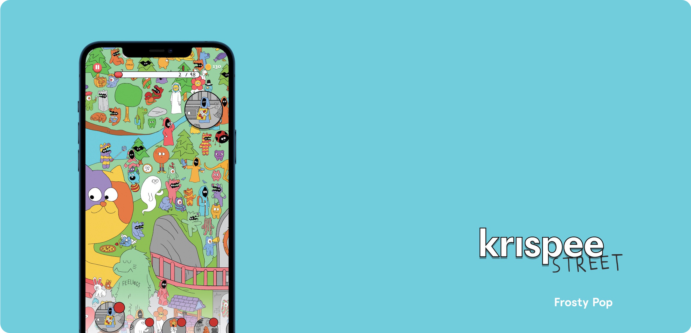
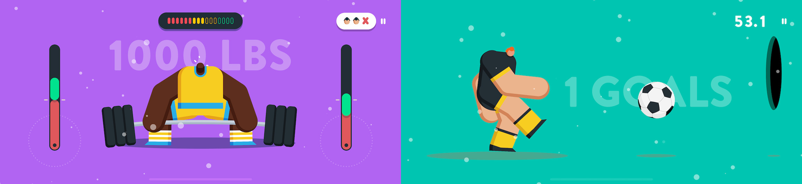
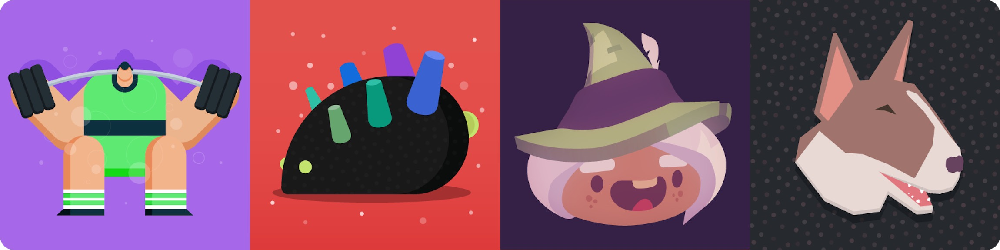
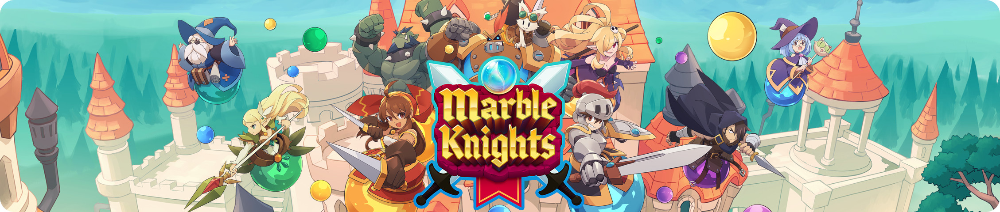
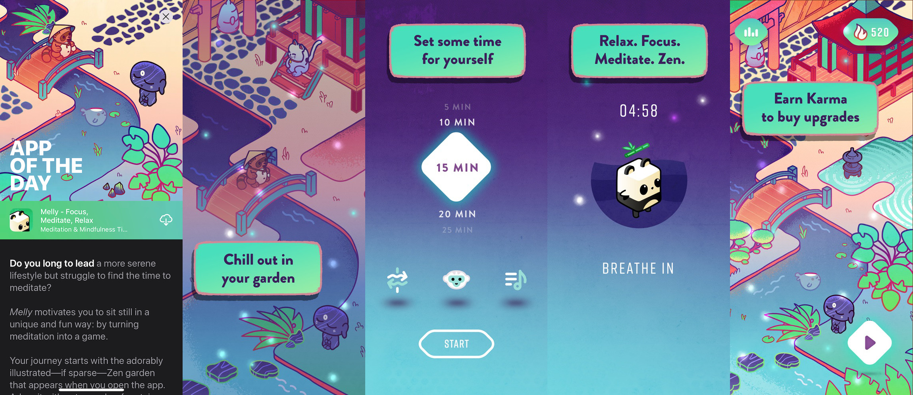

About Me
Hi 👋, my name is Noah, and I’ve been a software developer for the past twelve years. I have a wide range of experience in every facet of iOS development, building from the ground up or refactoring ancient codebases. I am also well-versed in game development, game engine architecture and Unity. I am a strong believer in pragmatic programming and bringing the user experience to the forefront.
Most of my expertise comes from building things in C#, Swift, Objective-C and C++, but I always love exploring new languages and better ways of solving problems.
Consulting
Krispee Street - iOS, Android

Krispee Street is a hidden object game based on the popular webcomic and published by Netflix Games.
I led the development of Krispee Street, working with the talented artists that create the Krispee comic, composer Sam Williams, and the founder of Frosty Pop to bring this whimsical take on the hidden object genre to life.
Beankind - iOS, Android
Beankind is an idle game with a twist - build up ‘taps’ to unlock new decorations for your room, each ‘tap’ you contribute is shared to the world which helps unlock global characters for everyone.
I worked with Ketnipz and the founder of Frosty Pop to build the Beankind app as well as the backend to support validating and synchronizing each player’s ‘taps’,
Big Time Sports - iOS, tvOS, Mac

Big Time Sports harkens back to the days of fast arcade action. With over 10 different mini-games to play there’s something for everyone. Big Time Sports is one of Apple Arcade’s exclusive launch titles available on iOS, tvOS, and Mac.
I led the development of Big Time Sports, collaborated with art/design and worked with the founder of Frosty Pop to realize his vision of a classic arcade game.
Apple Arcade Support

Along with Big Time Sports, Frosty Pop has released 4 other Apple Arcade games: Don’t Bug Me, The Pinball Wizard, Kings of the Castle, and The Get Out Kids.
Apple Arcade games take full advantage of Apple’s platform to create a unified experience across all of their devices (iOS, tvOS, and Mac). To this end, I built and integrated plugins to work with Apple APIs such as iCloud, Game Center leaderboards/achievements, and Game Center multiplayer. I also created a build system to automate the delivery of each game for iOS, tvOS and Mac.
Marble Knights - iOS, tvOS, Mac

Marble Knights is a multiplayer RPG with… Marbles! It is also one of Way Forward’s first games released on Apple Arcade.
For Marble Knights, I built plugins to support Apple’s Game Center multiplayer APIs, CloudKit for sync support, and MultipeerConnectivity for connecting local devices.
Morgan & Morgan - iOS
The Morgan & Morgan app was built from the ground up to support the nation’s largest personal injury firm. It features content related to the firm including news, past verdicts, attorneys, and more. The app also features important drug recalls that you can subscribe to in order to stay safe and informed.
I worked closely with Morgan & Morgan to help bring their app to life, creating the frontend, designing the backend API, and coordinating with a backend engineer to create the right solution that would help power the app.
My Apps
Recently featured 'App of the Day' and 'New Apps We Love'

Melly is an app that combines a beautiful zen garden with a focus/meditation timer. The more time you spend focusing/meditating the more rewards you will be given to enhance your garden. The hope is that by rewarding you for taking a constructive action that you are able to build healthy habits that can positively impact your life.
I conceptualized and created Melly as a way to limit the daily noise and to make meditation fun and fulfilling.
Experience
Consulting
2015 - Current
Guiding clients on the process and execution of building and shipping their apps/games. Offering expertise in user design and best practices in order to make their vision a reality.
Led the iOS development for rearchitecting Tumblr’s post forms and post format.
Developed a data-driven rendering library and revamped the MoPho app’s UX, leading to an acquisition by Shutterfly in 2012. Revamped UX and app architecture of the Shutterfly branded apps as well as introduced new features (store, collage, photo filters). Led development of the Tiny Prints app for creating, editing, and purchasing photo products with a native iOS experience. Awarded US Patent 9,153,056, Adaptive and fast image collage creation.
Worked on assorted aspects of gameplay programming for several games including tooling, graphics, user interaction, and AI.
Education
Northern Arizona University
B.S. in Computer Science
2009
Focused on various Computer Science topics. My favorites include Virtual Worlds, Topics in Game Production, Computer Graphics, and Compilers.